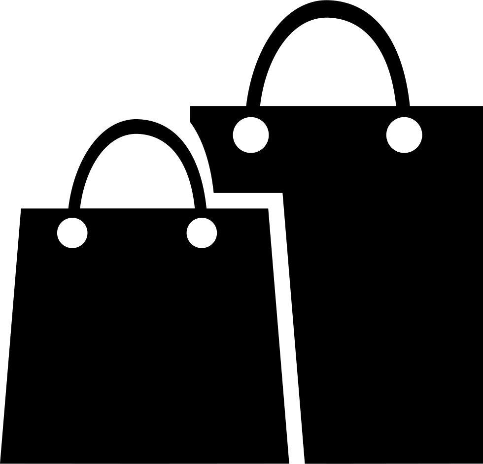

<!-- Шапка -->
<nav class="navbar navbar-expand-lg navbar-light fixed-top bg-light justify-content-center">
  <a class="navbar-brand">
    
    Школа 68.
  </a>

  <div class="btn-group" dropdown>
    <button id="button-basic" dropdownToggle type="button" class="btn btn-primary dropdown-toggle"
            aria-controls="dropdown-basic" style="margin-right: 15px;">
            Расписание <span class="caret"></span>
    </button>
    <ul id="dropdown-basic" *dropdownMenu class="dropdown-menu" 
        role="menu" aria-labelledby="button-basic" style="margin-right: 20px;">
      <li role="menuitem"><a class="dropdown-item" href="https://fb.rasp.rouvas.ru">Отзывы</a></li>
      <li class="divider dropdown-divider"></li>
      <li role="menuitem"><a class="dropdown-item" href="https://vk.com/school68pnz">Вконтакте</a>
       <li role="menuitem"><a class="dropdown-item" href="http://school68.edu-penza.ru/">Сайт школы</a>
      </li>
    </ul>
  </div>

</nav>

<!-- Блоки -->
<router-outlet></router-outlet>


<!-- Подвал -->
<footer class="no-print">
  <div class="mini-footer">
    <div class="container">
      <div class="row">
        <div class="col-md-12">
          <div class="copyright-text">
            <p>© 2020
              Школа 68 г. Пензы, Пензенской области.
             <br></p>
             <div *ngIf="auth.user | async as user; else showLogin">
               <button class="btn btn-success" routerLink = "/setup" routerLinkActive="active-link" style="margin-right: 5px;" >Войти в редактор</button>
               <button class="btn btn-warning" (click)="onLogout()" >Выход из аккаунта</button>
              </div>
             
             <ng-template #showLogin>
              <a routerLink="/auth" routerLinkActive="active" >Авторизация</a>
            </ng-template>
            <p class="font-weight-light">Версия 2.0</p>
          </div>
        </div>
      </div>
    </div>
  </div>
</footer>